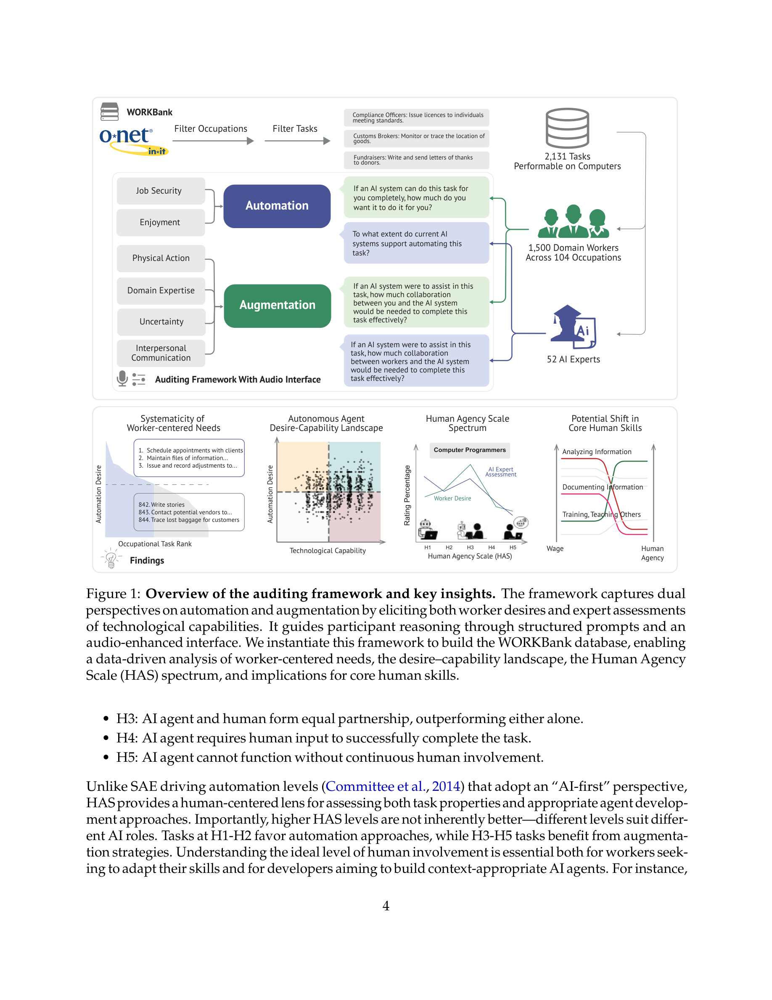

Figure 1
AI 에이전트가 미국 노동시장에 미치는 영향을 노동자 관점에서 체계적으로 감사(audit)하는 최초의 대규모 연구이다. 미국 노동부 O\*NET 데이터베이스의 844개 직업 과업(104개 직종)에 대해 1,500명의 현직 노동자와 52명의 AI 전문가로부터 자동화 욕구(automation desire)와 기술적 역량(technological capability)을 수집하여 WORKBank 데이터베이스를 구축했다. 핵심 도구로 Human Agency Scale (HAS, H1-H5)를 제안하여, 단순한 "자동화 가능 여부" 이분법을 넘어 인간-AI 협업의 스펙트럼을 정량화했다.
기존 AI 노동시장 영향 연구는 소프트웨어 엔지니어링이나 고객 지원 등 소수 도메인에 편중되어 있고, 자본 측면(수익성 높은 코딩 등)에 초점을 맞추며 노동자의 가치와 선호를 충분히 반영하지 못한다. 또한 기존 접근법은 챗봇 사용 데이터 분석에 의존하여, 아직 AI를 사용하지 않는 직종의 잠재적 수요를 포착하지 못한다. 자동화 vs. 증강(augmentation)의 이분법적 접근 역시 인간 참여의 다양한 수준을 포착하기에 부족하다.
| 수준 | 설명 | AI 역할 |
|---|---|---|
| H1 | AI가 과업을 완전히 독립 수행 | 자동화 |
| H2 | AI가 최소한의 인간 입력으로 수행 | 자동화 |
| H3 | AI와 인간의 동등한 파트너십 | 증강 |
| H4 | AI가 인간 입력을 필요로 함 | 증강 |
| H5 | 지속적 인간 참여 없이 AI 작동 불가 | 증강 |
AI 에이전트의 노동시장 영향을 노동자 관점에서 체계적으로 조망한 선구적 연구로, HAS라는 실용적 척도와 욕구-역량 지형도라는 분석 프레임워크가 학술적, 정책적으로 높은 가치를 지닌다. 특히 "정보 처리에서 대인관계 역량으로"의 스킬 전환 신호는 교육 및 인력개발 정책에 시사하는 바가 크다. 다만, 단일 시점의 스냅샷이라는 한계와 AI 역량의 급속한 진화를 고려할 때, 반복적 종단 연구로의 확장이 필수적이다.
| 항목 | 점수 (1-5) |
|---|---|
| Novelty | 4 |
| Technical Soundness | 4 |
| Significance | 4 |
| Overall | 4.0 |
총평: WORKBank와 인간 주체성 척도를 개발해 AI 에이전트 시대 미래 업무를 체계적으로 분석한 Stanford 연구로 정책적 시사점이 크다.